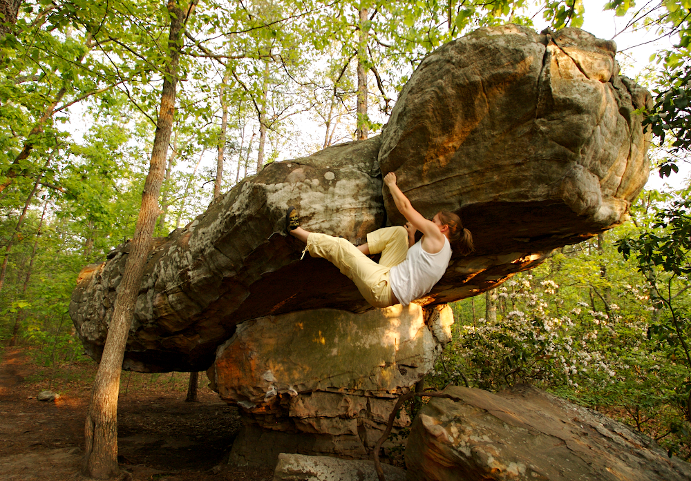
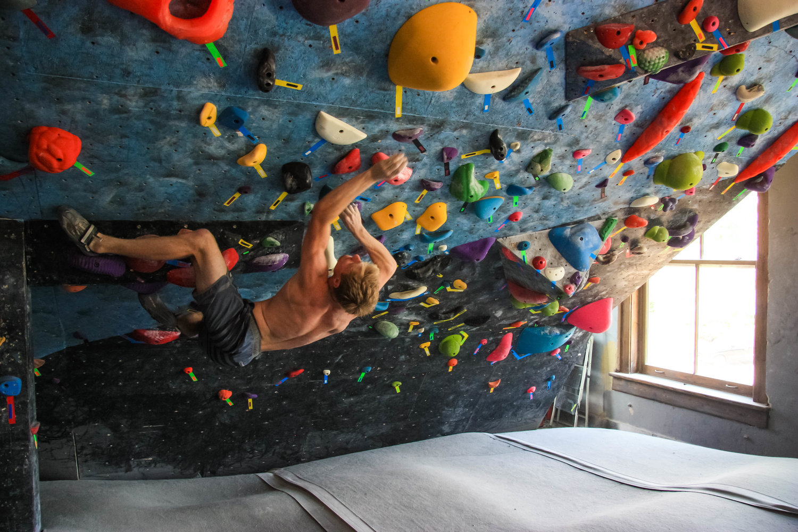

If you want an outdoor climbing expierence that isn't too far away then Rocktown Georgia is an excellent spot to go. It is about an hour outside of Chattanooga and offers some of the best bouldering for beginners and advanced climbers.
This is my old gym that is now Synergy Climbing and Ninja. This along with so many other gyms is a great way to start climbing, get to know people, and also keep in shape. I love going to the gym, it makes me feel better at the end of the day. So if you want to try bouldering get a day pass at a local gym.
© 2021 Lab Demo 2